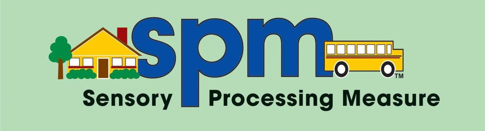

SENSORY PROCESSING MEASURE PRÉ-ESCOLAR CASA
| Nunca | Ocasionalmente | Frequentemente | Sempre | VISÃO A criança ... |
|---|---|---|---|---|
| N | O | F | S | 9. Fica aborrecida na presença de luzes especialmente luzes intensas (pisca os olhos ou quase que os fecha, chora, etc.) |
| N | O | F | S | 10. Tem dificuldade em encontrar um objeto pretendido no meio de tantos outros diferentes |
| N | O | F | S | 11. Tem dificuldade em reconhecer se os objetos são semelhantes ou diferentes baseando-se nas cores, formas ou tamanhos |
| N | O | F | S | 12. Gosta de observar objetos que rodopiem ou que se movam mais do que a maioria das crianças da sua idade |
| N | O | F | S | 13. Caminha de encontro a pessoas e objetos como se não estivessem lá |
| N | O | F | S | 14. Gosta de ligar e desligar repetidamente o interruptor da luz |
| N | O | F | S | 15. Gosta de olhar pelo canto do olho para objetos que se movam |
| N | O | F | S | 16. Tem dificuldade em prestar atenção se estiver num ambiente com muita informação visual |
| N | O | F | S | 17. Fica aborrecida num ambiente muito confuso (visualmente), tal como um quarto desarrumado ou uma loja com muitos objetos |
| N | O | F | S | 18. Distrai-se facilmente ao olhar para as coisas enquanto caminha |
| N | O | F | S | 19. Tem dificuldade em completar tarefas simples quando existem muitos objetos à sua volta |
| Nunca | Ocasionalmente | Frequentemente | Sempre | AUDIÇÃO A criança ... |
|---|---|---|---|---|
| N | O | F | S | 20. Fica aborrecida com sons típicos de casa tais como o aspirador, secador de cabelo ou autoclismo |
| N | O | F | S | 21. Foge, chora, tapa os ouvidos com as mãos ou responde negativamente quando ouve sons muito altos |
| N | O | F | S | 22. Parece não ouvir certos sons |
| N | O | F | S | 23. Parece perturbado por ou intensamente interessado em sons que não são usualmente notados pelas outras pessoas |
| N | O | F | S | 24. Distrai-se facilmente com barulhos de fundo tais como o cortador de relva no exterior, o ar condicionado, o frigorífico ou lâmpadas fluorescentes |
| N | O | F | S | 25. Gosta de produzir certos sons repetidamente como por exemplo puxar o autoclismo várias vezes seguidas |
| N | O | F | S | 26. Fica angustiada com sons estridentes ou metálicos tais como apitos, assobios, flautas e trompetes |
| N | O | F | S | 27. Fica stressada em ambientes ativos tais como festas ou salas com muita gente |
| N | O | F | S | 28. Assusta-se facilmente quando ouve sons muito altos ou inesperados |
| Nunca | Ocasionalmente | Frequentemente | Sempre | TOQUE A criança ... |
|---|---|---|---|---|
| N | O | F | S | 29. Afasta-se de ser tocado suavemente |
| N | O | F | S | 30. Prefere ser ela a tocar em vez de ser tocada por outros |
| N | O | F | S | 31. Fica angustiada quando tem que cortar as unhas |
| N | O | F | S | 32. Fica aborrecida quando alguém toca na sua cara |
| N | O | F | S | 33. Evita tocar ou brincar com digitintas, pastas de modelar, areia, barro, lama, cola ou outros materiais moles |
| N | O | F | S | 34. Tem uma grande tolerância à dor |
| N | O | F | S | 35. Não gosta de lavar os dentes quando comparada com as demais crianças da sua idade |
| N | O | F | S | 36. Aprecia sensações que podem ser dolorosas para as demais crianças tais como atirar-se para o chão ou bater no seu próprio corpo |
| N | O | F | S | 37. Não gosta que lavem, penteiem ou arranjem o seu cabelo |
| N | O | F | S | 38. Não gosta de cortar o cabelo |
| N | O | F | S | 39. Evita comidas com certas texturas |
| N | O | F | S | 40. Engasga-se ou vomitas perante comidas com certas texturas |
| N | O | F | S | 41. Não gosta de lavar nem de limpar a cara |
| N | O | F | S | 42. Baba-se mais do que a maioria das crianças da sua idade |
| Nunca | Ocasionalmente | Frequentemente | Sempre | GOSTO E OLFACTO A criança ... |
|---|---|---|---|---|
| N | O | F | S | 43. Gosta de levar à boca objetos não comestíveis tais como cola ou tintas |
| N | O | F | S | 44. Parece não dar conta ou ignorar odores fortes |
| N | O | F | S | 45. Prefere tanto certos sabores de comida ao ponto de recusara refeição oferecida |
| N | O | F | S | 46. Recusa-se a usar a pasta dos dentes |
| Nunca | Ocasionalmente | Frequentemente | Sempre | CONSCIÊNCIA CORPORAL A criança ... |
|---|---|---|---|---|
| N | O | F | S | 47. Agarra nos objetos (lápis ou colher da sopa) com tanta força que se torna difícil usar o objeto |
| N | O | F | S | 48. Tem o impulso de procurar atividades tais como puxar, empurrar, arrastar, levantar e saltar |
| N | O | F | S | 49. Tem dificuldade em calcular os movimentos do corpo precisos para se sentar corretamente numa cadeira ou avançar um obstáculo sem esbarrar no mesmo |
| N | O | F | S | 50. Agarra nos objetos (lápis ou colher da sopa) de forma tão suave que se torna difícil usar o objeto |
| N | O | F | S | 51. Parece exercer demasiada pressão nas tarefas (ex: bate com os pés no chão ao caminhar, bate com as portas ou exerce demasiada força ao usar o lápis) |
| N | O | F | S | 52. Salta muito |
| N | O | F | S | 53. Tem tendência a fazer festas aos animais com demasiada força |
| N | O | F | S | 54. Empurra ou puxa as outras crianças com frequência |
| N | O | F | S | 55. Morde objetos ou até mesmo a roupa com maior frequência do que as crianças da sua idade |
| Nunca | Ocasionalmente | Frequentemente | Sempre | MOVIMENTO E EQUILÍBRIO A criança ... |
|---|---|---|---|---|
| N | O | F | S | 56. Mostra um medo excessivo do movimento em atividades como subir e descer escadas, andar de baloiço, escorregão ou outras atividades |
| N | O | F | S | 57. Evita atividades que exijam equilíbrio, como por exemplo, caminhar nas bermas dos passeios ou pavimentos irregulares ou desnivelados |
| N | O | F | S | 58. Deixa-se escorregar pela cadeira quando está sentado (tem dificuldade em manter o tronco ereto) |
| N | O | F | S | 59. Tem dificuldade em proteger-se da queda (é tardia em usar as reações de proteção) |
| N | O | F | S | 60. Parece não ficar tonta com o movimento enquanto as outras crianças geralmente ficam |
| N | O | F | S | 61. Rodopia ou gira sobre si própria mais do que as outras crianças |
| N | O | F | S | 62. Fica perturbada quando inclina a cabeça |
| N | O | F | S | 63. Revela pobre coordenação e parece ser trapalhona |
| N | O | F | S | 64. Encosta-se nas pessoas ou na mobília como suporte de apoio enquanto está sentada ou quando se tenta levantar do chão |
| N | O | F | S | 65. Balanceia o corpo enquanto está sentada |
| N | O | F | S | 66. Balanceia o corpo enquanto está sentada |
| Nunca | Ocasionalmente | Frequentemente | Sempre | PLANEAMENTO MOTOR E IDEAÇÃO A criança ... |
|---|---|---|---|---|
| N | O | F | S | 67. Tem dificuldade em descobrir como manipular múltiplos objetos |
| N | O | F | S | 68. Fica confusa quando tem que arrumar os materiais nos seus devidos lugares |
| N | O | F | S | 69. Tem dificuldade em seguir a sequência das atividades da vida diárias tal como vestir-se ou tomar banho (ex.: para se vestir, primeiro pega nas cuecas, depois nas meias, depois nas calças, etc.) |
| N | O | F | S | 70. Tem dificuldade em completar tarefas com vários passos |
| N | O | F | S | 71. Tem dificuldade em imitar corretamente ações que foram demonstradas previamente (ex: jogos com movimento, canções com gestos) |
| N | O | F | S | 72. Tem dificuldade em copiar uma construção feita por um colega ou pelo adulto |
| N | O | F | S | 73. Tem dificuldade em introduzir novas ideias durante as suas brincadeiras |
| N | O | F | S | 74. Tem tendência a brincar repetidamente com as mesmas atividades e não gosta de mudar para atividades novas quando surge essa oportunidade |
| N | O | F | S | 75. Tem dificuldade em entrar e sair do triciclo |
| Avaliação | Pontuação | Comentário |
|---|---|---|
| Participação social | ||
| Visão | ||
| Audição | ||
| Toque | ||
| Gosto e Olfato | ||
| Consciência Corporal | ||
| Movimento e Equilibrio | ||
| Planeamento Motor e Ideação | ||
| TOTAL |